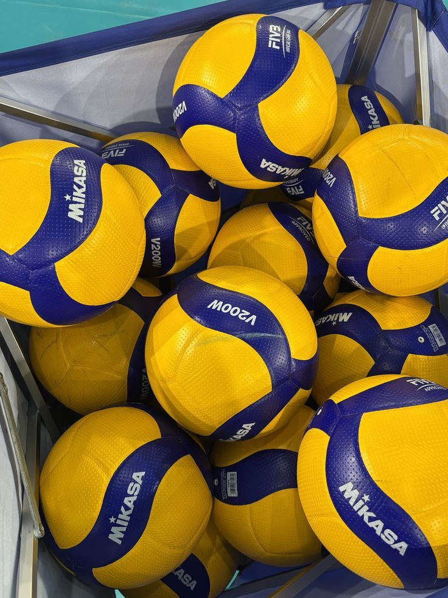
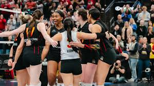

My favourite hobby is playing volleyball.I love playing this sport because every day a chance is given to me to increase my strength and the way that i play .Its not just a way of exercise but a way to socialize too .This sport connects people and creates meaningfull friendships that last for life
Volleyball is all about percise techneque that requires a lot of strength and talent.One of the most exciting aspects of volleyball is the veriety of skills involved .Players must learn how to serve,pass,block and dig effectivly.Mastering these skills takes practice discipline and teamwork
Volleyball is both played indoors and outdoors,including popular veriations like beach volleyball.It is enjoyed by people of all ages around the world,from casual players to proffessional athletes
Volleyball is not only a physical sport but also a mental one.Players must constantly anticipate the opponets moves and adjust their positioning accordingly.Team morale and encouragement can greatly influence the outcome of a game